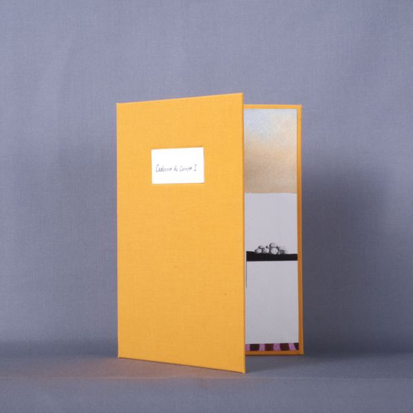
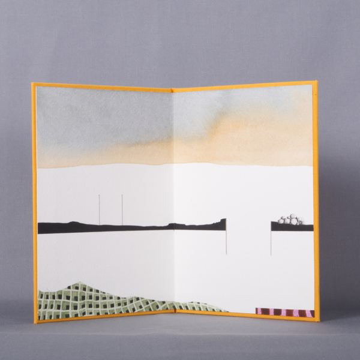
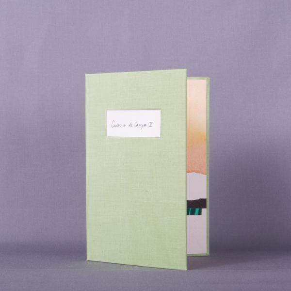
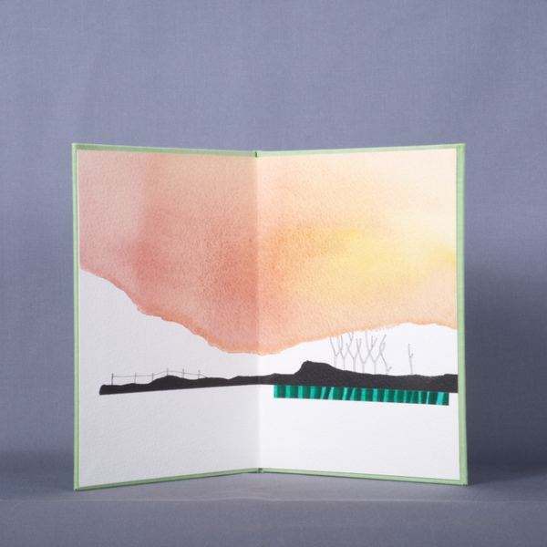
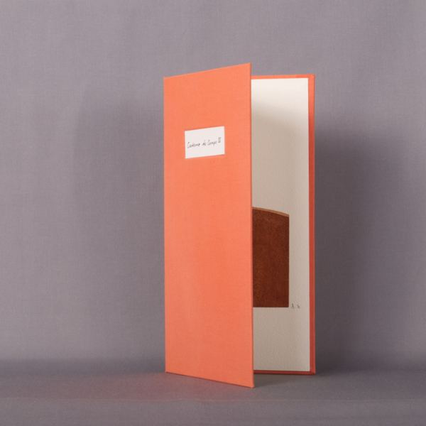
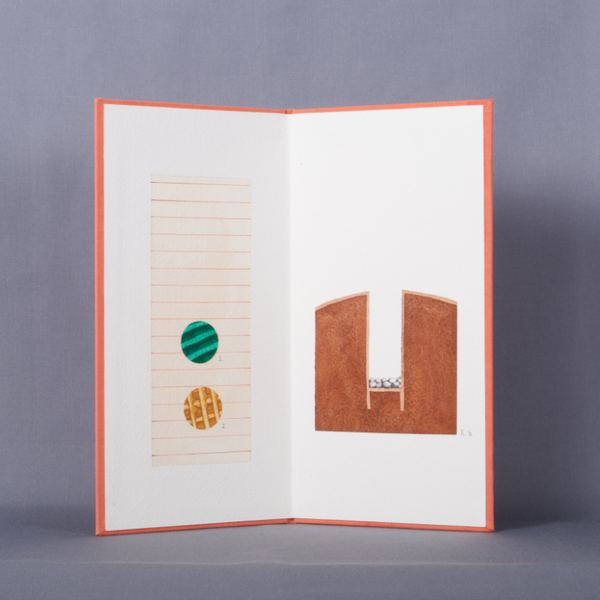
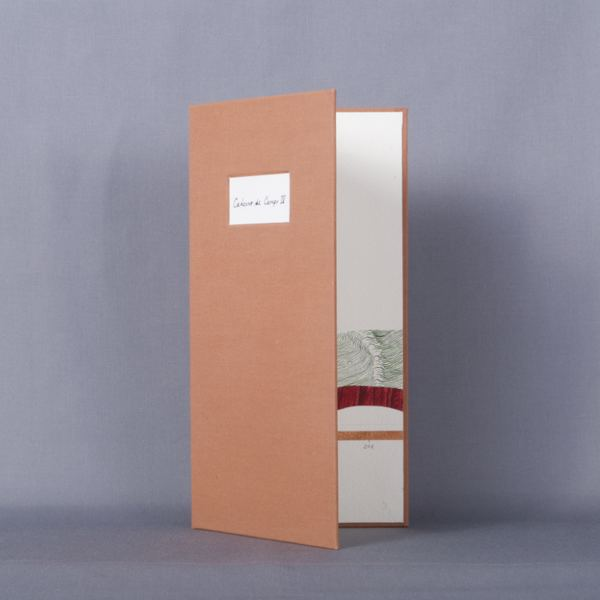
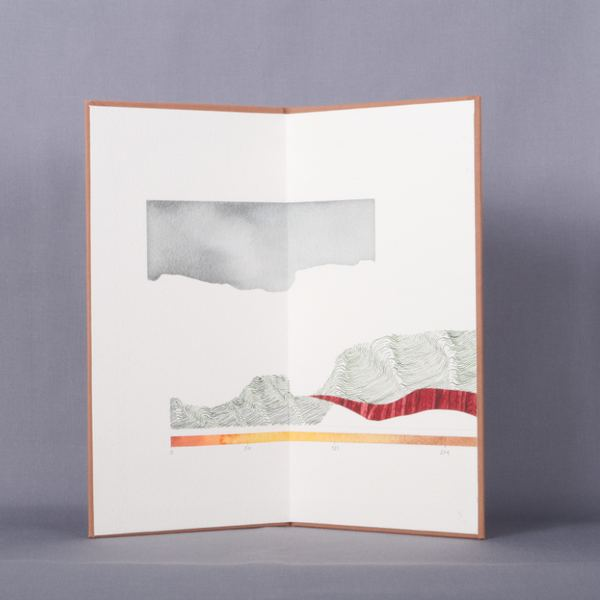
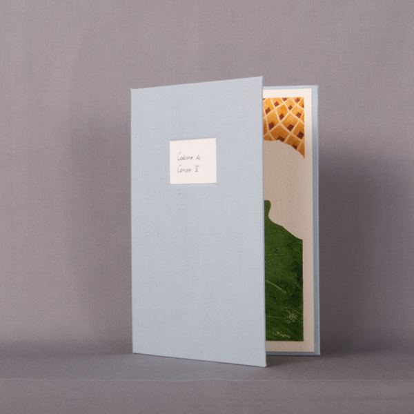
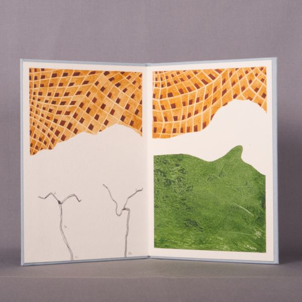

Coleção Montanha Mágica
A Coleção Montanha Mágica reúne cinco cadernos de campo feitos no contexto da residência artística White Box, no Museu do Caramulo, e que pertencem agora à coleção do museu.
Chamei-lhe Montanha Mágica porque é assim que se chama ao Caramulo, num paralelo com o romance de Thomas Mann, passado num sanatório de montanha.
The Magic Mountain Collection brings together five field notebooks made during the White Box artist residency at the Museu do Caramulo. They now belong to the museum's collection.
I named it Magic Mountain because that is what the Caramulo is called, a parallel with Thomas Mann's novel, set in a mountain sanatorium.



















